Report Designer/Form¶
Form is a built-in type of report part that allows WYSIWYG editting in HTML. User can:
- Interactively design the form using icons on the toolbar, with muli-level Undo and Redo.
- Add dynamic content using smart tags.
- Add recurring content using innovative repeater tags, see Repeater Smart Tag.
- Leverage existing report parts by embedding them into the form.
- Edit the form in HTML format (for experienced users).
{kind=link}
Fig. 276 Form - Properties Sections
Form properties are grouped into several sections:
- Form
- Edit
- Insert
- Format
- Table
- Tool
- View
- Printing
Configure General Form Properties¶
General Form properties can be configured in Form section:
- 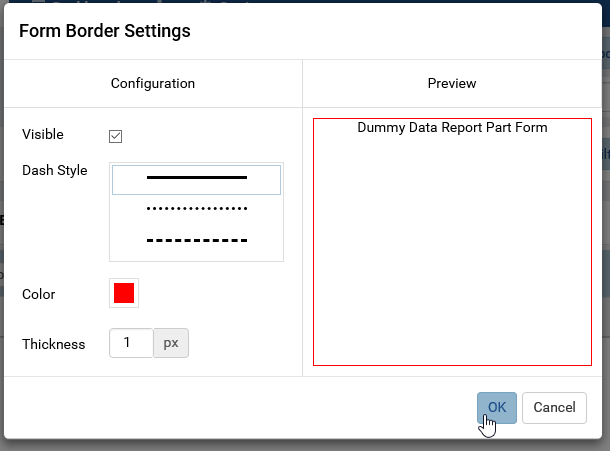
Fig. 277 Form - Border Settings
Form border
- Click the gear icon (⚙) to open Form Border Settings pop-up.
- Choose the border to be visible or not.
- Select a border color.
- Select the border thickness (in pixels).
- Click OK to close the Form Border Settings pop-up.
Note
The Preview section will not be shown (as image below) if the Show Preview section in Configuration Mode checkbox is unticked in Others tab in Advanced Settings.

Report Designer - Gauge Border Settings without Preview section
Please see Update Others Settings for more details.
Form background color
- Click the color icon to open the color palete.
- Choose a color from the color palete.
- Click OK to close the pop-up and apply the selected color.
{kind=link}
Edit Section¶
Click inside the text area in Visual mode to see all the toolbar icons.
Copy, Cut and Paste:
Highlight one or multiple items then click Copy or Cut, then Paste into another place. Paste as Text will remove all formatting from the items. (This feature is still in progress.)
Find and Replace text values while preserving the formatting.
Muli-level Undo and Redo.
Insert Items in Visual mode¶
Many items can be quickly and interactively inserted using the icons in visual mode:
- 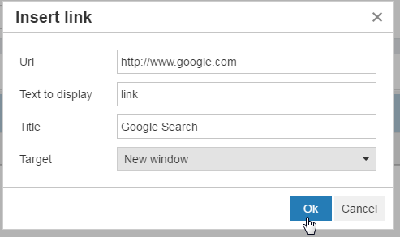
Fig. 278 Form - Insert Link
Link
The link is displayed as 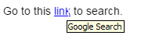.
- 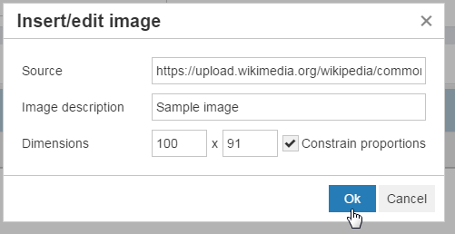
Fig. 279 Form - Insert Image
Image
Anchor
Special character
Current date value
Horizontal line
Page break
Template break
- 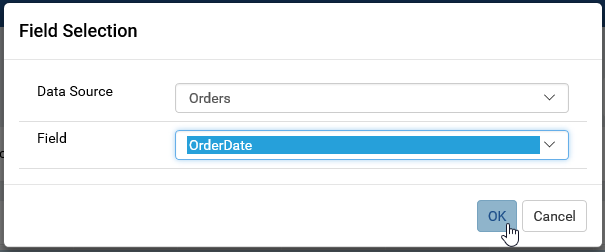
Fig. 280 Form - Insert Data Source Field
Data Source Field
Smart Tag. This is a dynamic content that will be updated on display:
- Date Time - it will show the date value at the time of display (compared with “Insert date/time value” button that populates the fixed date value at the time of editing).
- Subtotal - it will show the sub total value for a field being used in the form.
- Grand Total - it will show the grand total value for a field being used in the form.
Embedded Report Settings - To be updated.
{kind=link}
{kind=link}
{kind=link}
Format Items in Visual mode¶
Formatting can also be quickly applied using the icons in visual mode:
- Heading styles
- Grouping HTML tags <p>, <blockquote>, <div> and <pre>.
- <p> is used for a paragraph;
- <blockquote> is used to quote content from another source, usually with a <cite> tag containing the reference.
- <pre> is used for preformatted content, which would be displayed differently without the tag.
- <div> is used to group items together for easy organization and formatting.
- Font face and font size.
- Text effects bold, italic, underlined and struck through.
- Text effects superscript, subscript, and computer code style <code> (displayed in a monospaced font by default).
- Font color and background color.
- Text alignment.
- Bulleted and numbered list styles.
- Indent space.
- Clear Formatting
Design a Table in Visual mode¶
- 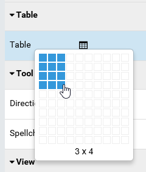
Fig. 281 Form - Insert Table
Click the Insert Table icon in Table section, then interactively select the number of columns and rows.
- 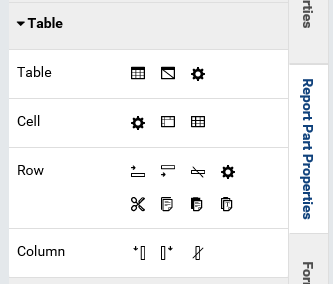
Fig. 282 Form - Table Properties
Click inside the table in Visual mode to see more icons in Table section, divided into Table, Cell, Row and Column groups.
Configure table-wide settings in Table Properties pop-up.
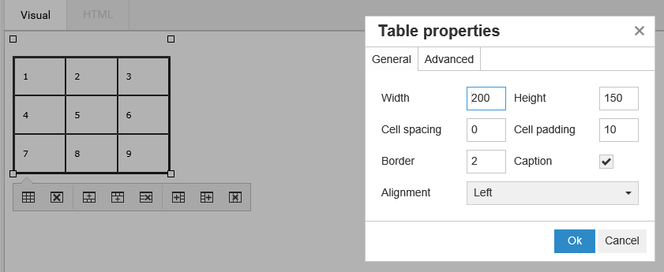Fig. 283 Form - Table General Properties
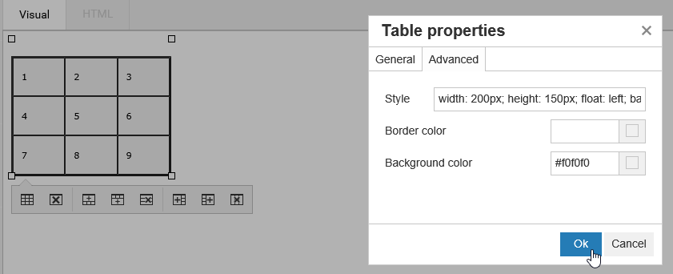Fig. 284 Form - Table Advanced Properties
- 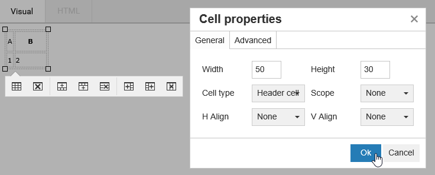
Fig. 285 Form - Table Cell General Properties
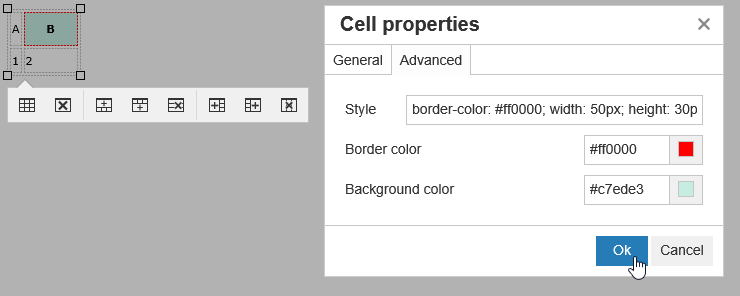Fig. 286 Form - Table Cell Advanced Properties
Configure each cell in Cell Properties pop-up.
- 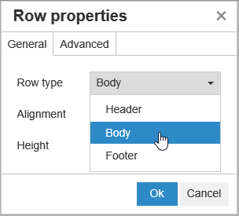
Fig. 287 Form - Table Row Properties
Configure each row in Row Properties pop-up.
{kind=link}
{kind=link}
{kind=link}
{kind=link}
{kind=link}
{kind=link}
{kind=link}
Note
{kind=link}
Fig. 288 Form - Table Floating Toolbar
The floating toolbar contains quick access icons for table properties and quickly adding and removing columns and rows.
Tool Section¶
- Directionality supports formatting right-to-left languages with the Right to Left icon.
Editing Preferences in View Section¶
Editing preferences can be configured in View section:
- Show invisible characters.
- Show Visual Aids.
- Show the form in fullscreen mode.
- Edit Data Refresh Interval settings.
- Use Pagination
Printing Section¶
- Tick “Page Break After Each Entry” checkbox to print each data object in a separate page.
{kind=link}
Edit in HTML format¶
In HTML tab:
User can edit the raw HTML code and see the changes reflected in Visual mode or Preview mode.
User can use the now visible HTML group in Properties box.
- Tick the Wrap Text checkbox to make long lines of code span multiple lines.
- Tick the Highlight Code checkbox to enable syntax highlighting for HTML tags.
- Click the Reformat button to beautify the code.
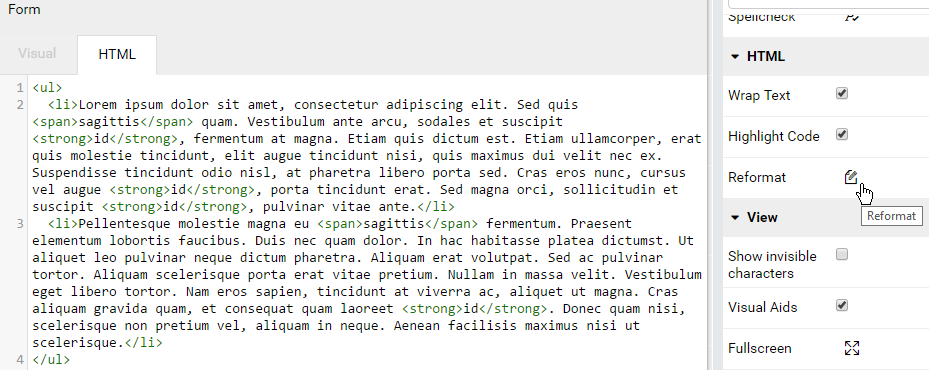Fig. 290 Form - HTML Properties
{kind=link}
Repeater Smart Tag¶
The Repeater smart tag allows repeating form content to dynamically display data. That content will be repeated for each unique set of values of the data.
For example, the Repeater smart tag can be used to display Freight amount for each ShipCity in each ShipCountry, in a format totally customizable by the report designer.
{kind=link}
Fig. 291 Form - Sample Repeater Result
To repeat a specific form content:
- Either select the content then click Repeater > Add in Insert group in Report Part Properties panel
- Or wrap the content by
<repeater>and</repeater>tags in HTML view
- Make sure that the field values outside of Repeater tags are either unique or grouped.
(In this example ShipCountry field has “Group” as Function in Data Formatting)
The selected content will be highlighted in Visual view.
{kind=link}
Fig. 292 Form - Repeater Indicator in Visual view
Steps for this specific sample:
Type “In country ” then add field ShipCountry, select “Group” as Function in Data Formatting then enter.
Type “In city ” then add field ShipCity then select “Group” as Function in Data Formatting.
Select both lines then choose Bullet List in Format group in Report Part Properties panel.
Click anywhere in the second line and choose Increase Indent in Format group in Report Part Properties panel.
Switch to HTML view to easily enter
<repeater>and</repeater>tags in correct position.Also add one more <br /> tag to make the view prettier.
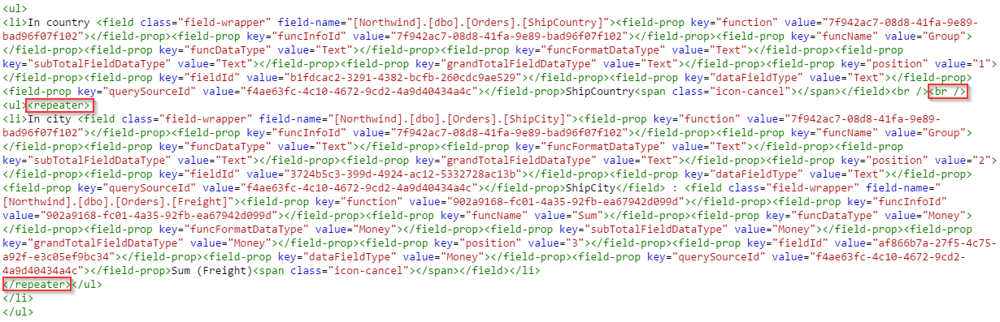Fig. 293 Form - Repeater tags in HTML view
{kind=link}